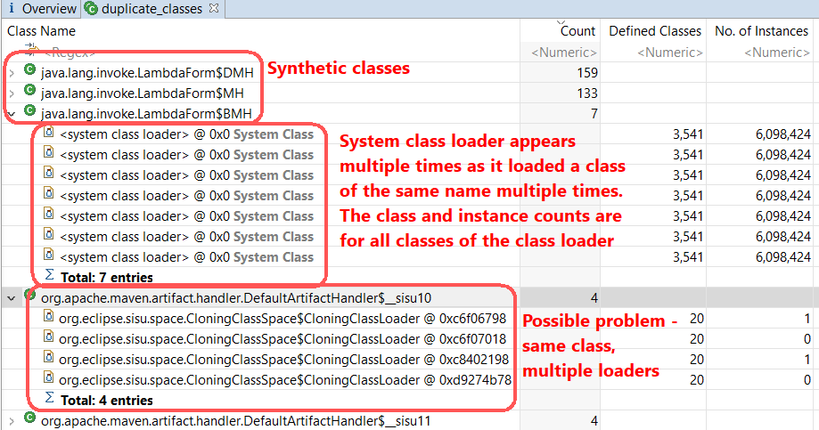

Classes where there are two or more with the same name.
| Argument | Description |
|---|---|
| None | No arguments are supplied to this query |
A tree showing each class which has been loaded multiple times. Underneath are the class loaders which loaded the class of that name.
If a classes has been loaded multiple times then this might indicate a problem. Sometimes it is deliberate, where different class loaders are part of the application. Sometimes a class is replaced on the fly by the application or as part of a deploy/undeploy cycle in an application server and the old class loader and associated classes should be garbage collected. This can only happen once all the instances of classes, the classes themselves and the class loader are no longer accessible from the rest of the application or GC roots.
If there are no or few instances shown in a class loader line then that class loader might not be used anymore, but some spurious refence might be keeping the class loader alive or one of its defined classes or some of the instances alive, and so that class loader alive. The Path to GC Roots query can help tell why a class loader is kept alive.
Defined Classesand
No. of instancescolumns show figures for the entire class loader.